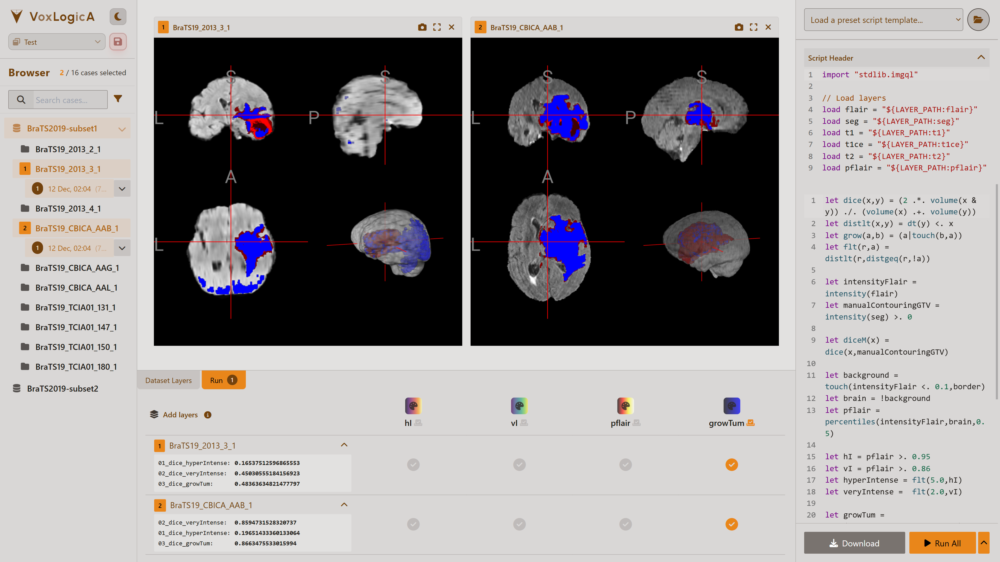
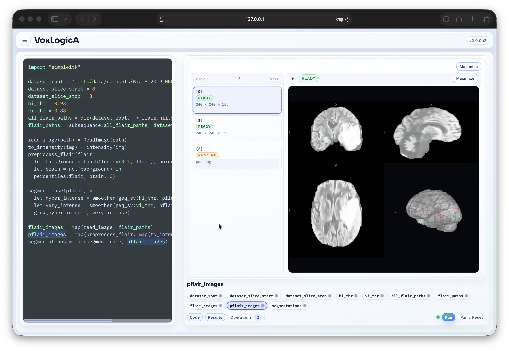

Spatial model checking
for medical image analysis
VoxLogicA is a free, open-source spatial model checker that turns short logical specifications into executable image-analysis procedures — inspectable, revisable, and runnable on 3D medical volumes.

How it works
Instead of training a neural network or writing low-level image-processing code, users describe what they are looking for — intensity regions, spatial relationships, distances, connectivity — in a concise specification language called ImgQL. VoxLogicA evaluates the description directly on 3D medical volumes and returns the result as a new image layer.
The approach is designed around human oversight: every step of a specification is readable, revisable, and explainable. The companion VoxLogicA UI provides a dataset-oriented browser interface for rapid prototyping — load imaging datasets, write and run specifications, and visually compare results against ground-truth segmentations, all without leaving the browser.
VoxLogicA has been validated on over 760 brain MRI volumes across the BraTS 2017, 2019, and 2020 challenge datasets, achieving Dice similarity scores in line with state-of-the-art methods — around 0.90 Dice for whole-tumour segmentation. On BraTS 2020, a hybrid workflow combining VoxLogicA specifications with nnU-Net predictions further improves accuracy while keeping every logical step fully transparent. The approach has also been applied to nevus segmentation in dermoscopic images and to tissue classification on the BrainWeb synthetic dataset.
The tool is free and open-source, implemented in F# on .NET, and runs on Windows, macOS, and Linux. It executes in parallel across all available CPU cores: a full 3D brain MRI segmentation — nine million voxels — completes in 5–10 seconds on a standard desktop, enabling interactive development and rapid iteration. A GPU-accelerated variant, VoxLogicA-GPU, has also been developed, extending the approach to video stream analysis and further improving performance on large datasets.


let flair = intensity(flair)
let hi = flair >. 0.95
let vi = flair >. 0.86
let hyper = flt(5.0, hi)
let very = flt(2.0, vi)
let lesion = touch(hyper, very)A complete brain-tumour segmentation procedure in ImgQL — six readable lines that a domain expert can inspect, adjust by hand, or combine with machine-learning predictions in a hybrid workflow.
VoxLogicA 2
VoxLogicA 2 is a ground-up rewrite that extends the declarative image-analysis paradigm to hybrid AI workflows. Training and prediction become first-class primitives in the specification language: a single script can invoke a neural network, train it on labelled data, and compose its output with logical operators — all within one auditable dataflow plan.
The new runtime, built on Python and Dask, adds distributed execution across multiple machines, a persistent results cache, and execution boundaries that respect privacy and intellectual-property constraints — enabling federated analysis scenarios where imaging data never leaves the hospital.

Key papers
-
Artificial Intelligence in Medicine, 2025Symbolic and hybrid AI for brain tissue segmentation using spatial model checkingSymbolic and hybrid methods for 3D brain MRI segmentation; explainability, accountability, validation on public benchmarks.
-
ISoLA, 2024Towards Hybrid-AI in Imaging Using VoxLogicACombining logical procedures and learned components in a single imaging workflow.
-
TACAS, 2019VoxLogicA: A Spatial Model Checker for Declarative Image AnalysisFoundational paper introducing spatial model checking for declarative image analysis.
-
SPIN, 2021A Hands-On Introduction to Spatial Model Checking Using VoxLogicATutorial paper with worked examples: image-analysis specifications for brain MRI segmentation.
-
FormaliSE, 2021Feasibility of Spatial Model Checking for Nevus SegmentationApplying spatial model checking to dermoscopic image segmentation, with results comparable to expert annotations.
-
FORTE, 2021Towards a Spatial Model Checker on GPUGPU-based implementation of core spatial model checking primitives, accelerating VoxLogicA on parallel hardware.
-
DataMod, 2021Towards Model Checking Video Streams Using VoxLogicA on GPUsExtending GPU-accelerated spatial model checking to video streams, with preliminary use cases for frame-by-frame analysis.
-
PhD Thesis, 2024Model Checking Properties with Identity Binding in Space-TimeLaura Bussi's doctoral thesis: development of VoxLogicA-GPU, spatial logics with identity binding, and model checking over space-time structures.
-
Thesis, 2025VoxLogicA UIBrowser-based interface for spatial model checking: deployment, collaborative workflows, usability evaluation.